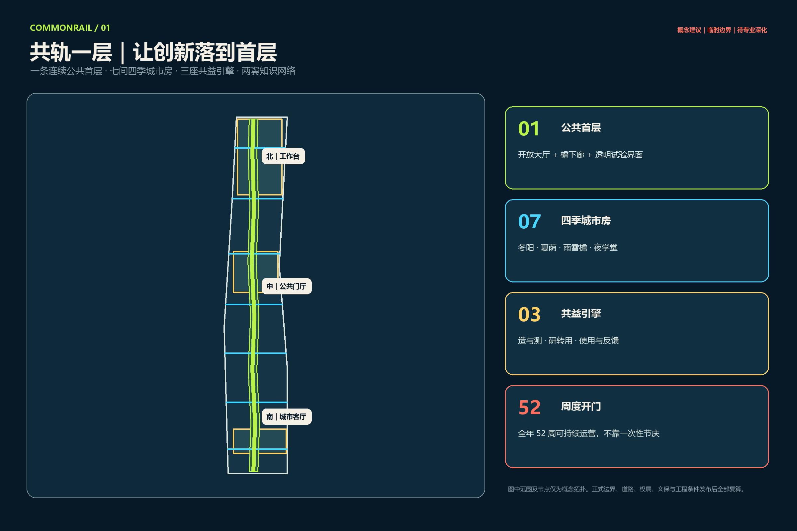
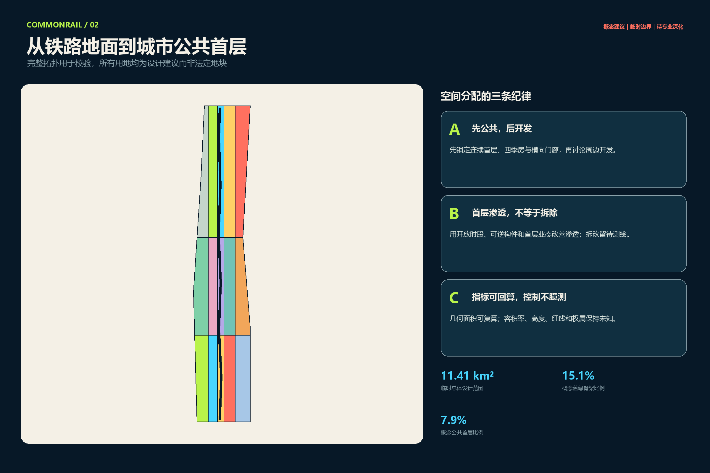
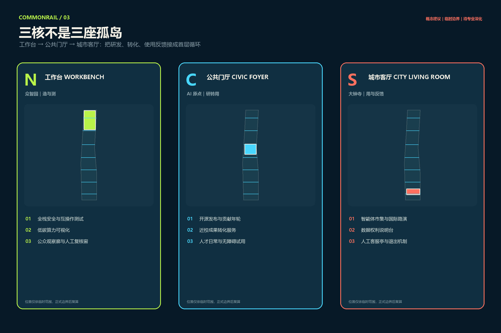
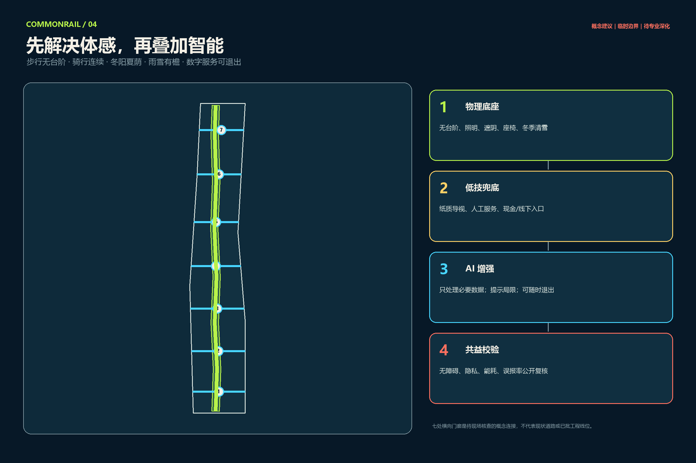
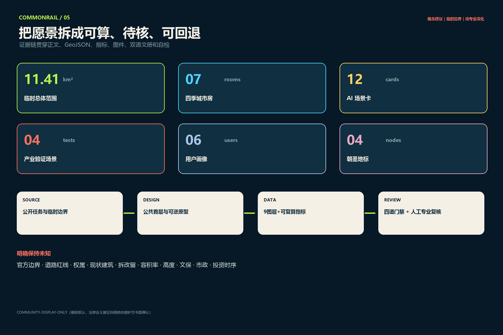

北｜工作台
众智园：全栈安全、互操作与低碳算力的开放测试廊。
让创新落到首层：把开放大厅、檐下廊、四季室外房间和透明试验界面连成可日常使用的公共创新骨架。
一条连续公共首层 · 七间四季城市房 · 三座共益引擎 · 两翼知识网络

统筹研究范围讨论生态机制；总体设计范围用临时边界建立可审计拓扑；重点区域分别验证“造与测、研转用、用与反馈”。所有几何均为概念建议，需在正式边界发布后复算。

众智园：全栈安全、互操作与低碳算力的开放测试廊。
北京 AI 原点：开源发布、近校转化与人才日常共同发生。
大钟寺：智能体市集、国际路演、数据权利说明与人工服务。

无台阶、照明、遮阴、座椅、冬季清雪。
纸质导视、人工服务、线下入口。
最小数据、显示局限、随时退出。
公开复核无障碍、隐私、能耗与误报。

模型安全与互操作、端侧硬件四季测试、低碳算力核验、无障碍人机共测。
慢行辅助、国际访客、遗产叙事、社区照护、夜学、邻里商业、夜间安全、离线演练。
每周开门、每季复盘、年度 Ground One Forum；小步试点、公开复核、可逆退出。

自检状态：本地空间、可视、专业证据与确定性门禁需在 finalize 后再次运行。容积率、高度、红线、权属、现状建筑、拆改留、市政和投资时序明确保持未知。
官方公告、Agent 任务书、仓库场地包、来源登记表和处理后事实包。全球案例只作机制比较，不作场地事实或控制依据。
当前边界和三处重点区均为维护者临时几何；所有设计图层是可供专业团队深化的参考方案，不代表政府批准或实施承诺。